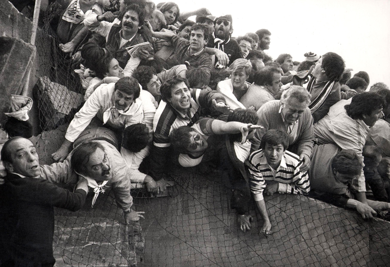
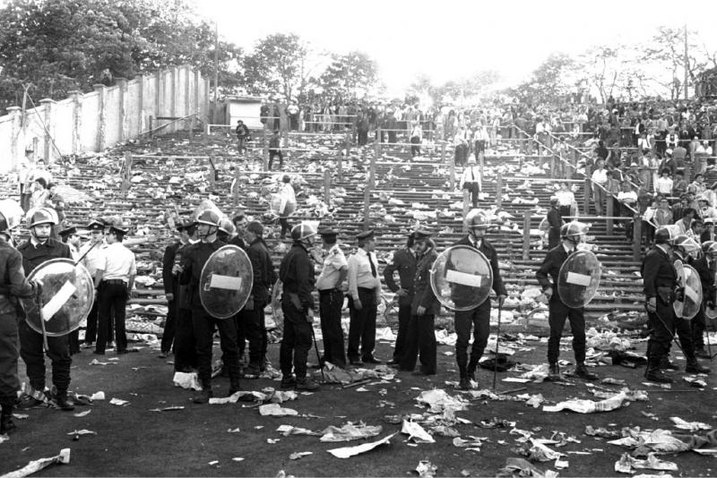
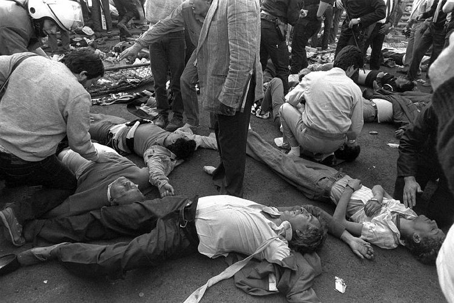
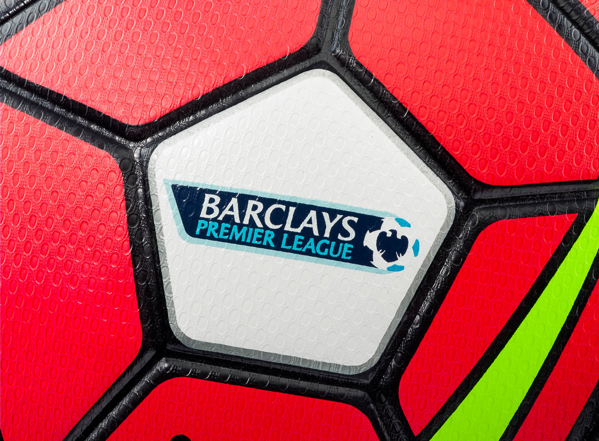
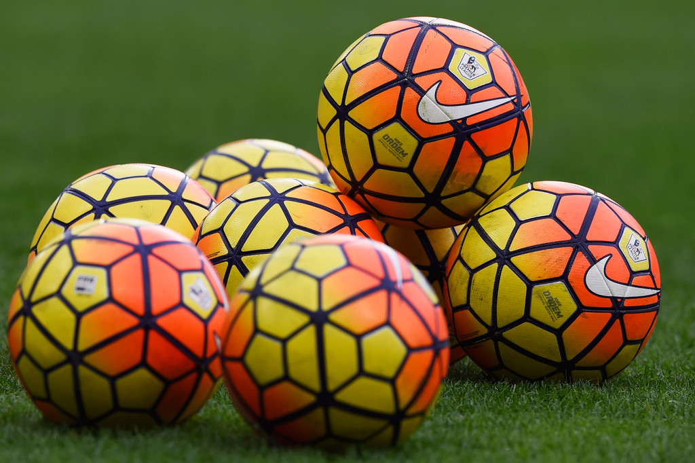
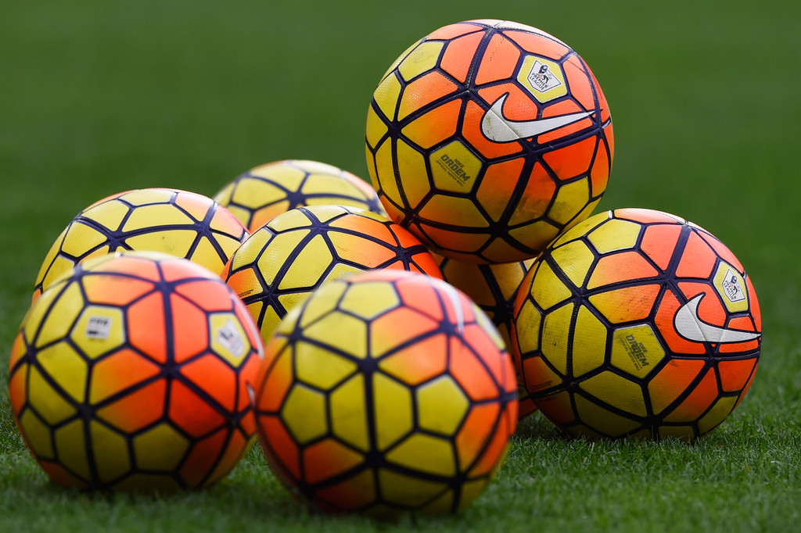

Несмотря на значительные успехи английских клубов в еврокубках в 1970-е годы, в конце 1980-х в английском футболе наметился заметный спад. Стадионы были в плохом состоянии, обыденным явлением стало футбольное хулиганство, вдобавок к чему все английские клубы были дисквалифицированы от участия в еврокубках после Эйзельской трагедии 1985 года*. Первый дивизион Футбольной лиги, который был высшим дивизионом в английском футболе с 1888 года, сильно отставал от итальянской Серии A и испанской Ла Лиги по посещаемости стадионов и уровню доходов, из-за чего некоторые ведущие английские футболисты отправились выступать за рубежом.
*Эйзельская трагедия 1985 года - произошла 29 мая 1985 года в Брюсселе, Бельгия, во время финала Кубка европейских чемпионов между итальянским «Ювентусом» и английским «Ливерпулем». В результате обрушения стены одной из трибун погибло 39 человек, преимущественно итальянцев, сотни раненых.
  
Однако в начале 1990-х ситуация начала меняться в лучшую сторону: сборная Англии удачно выступила на чемпионате мира 1990 года, достигнув полуфинала; УЕФА снял пятилетний запрет на выступление английских клубов в европейских кубках в 1990 году. Доходы от телевизионных трансляций становились всё более значимыми: в 1986 году Футбольная лига получила 6,3 млн фунтов за двухлетнее соглашение о продаже прав на телетрансляции, а уже в 1988 году сумма нового четырёхлетнего контракта составила 44 млн фунтов.
По завершении сезона 1990/91 поступило предложение об учреждении новой лиги с целью привлечения большего количества денег. 17 июля 1991 года клубы, входящие в Первый дивизион Футбольной лиги, подписали Учредительное соглашение, устанавливающее базовые принципы новой организации, которую решено было назвать Премьер-лигой Футбольной ассоциации (FA Premier League).
После образования Премьер-лиги в Футбольной лиге осталось три дивизиона. Формат чемпионата не изменился: в турнире приняло участие то же количество команд, что и ранее в Первом дивизионе (22 команды); правила «выхода и вылета» команд между Премьер-лигой и новым Первым дивизионом остались теми же, как между старым Первым и Вторым дивизионами.
Премьер-лигу основали 22 клуба: «Арсенал», «Астон Вилла», «Блэкберн Роверс», «Челси», «Ковентри Сити», «Кристал Пэлас», «Эвертон», «Ипсвич Таун», «Лидс Юнайтед», «Ливерпуль», «Манчестер Сити», «Манчестер Юнайтед», «Мидлсбро», «Норвич Сити», «Ноттингем Форест», «Олдем Атлетик», «Куинз Парк Рейнджерс», «Шеффилд Юнайтед», «Шеффилд Уэнсдей», «Саутгемптон», «Тоттенхэм Хотспур» и «Уимблдон».
На данный момент, английская премьер-лига одна из самых популярных и интереснейших турниров в футбольном мире.

 
